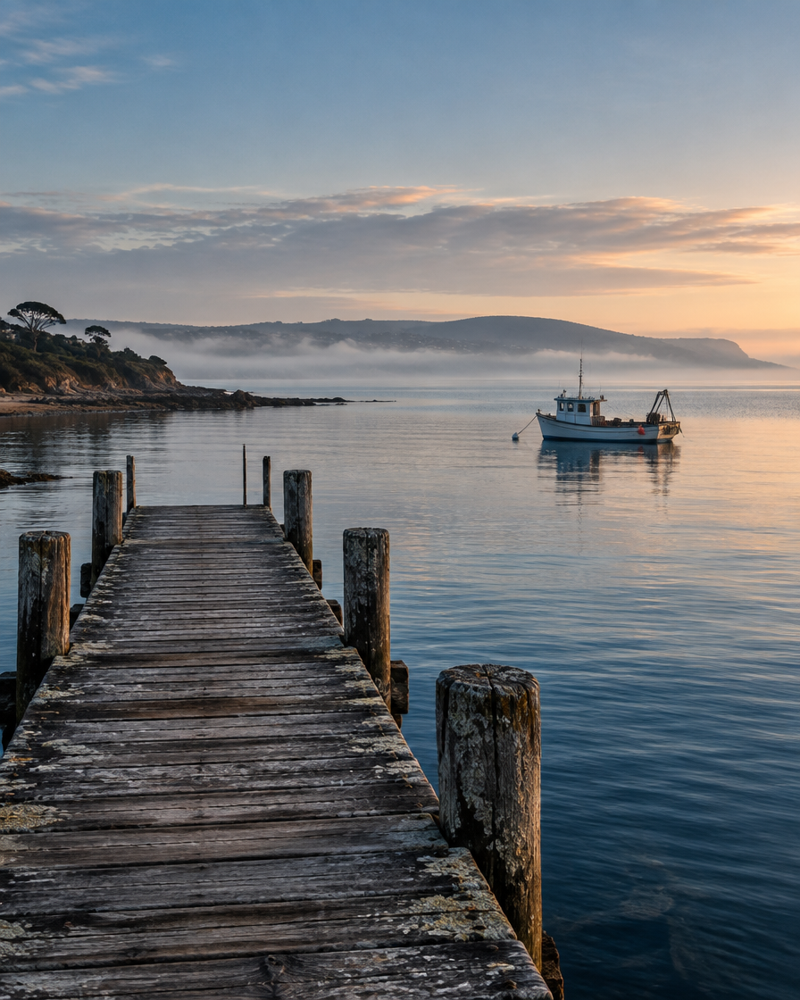

Peninsula Insider
01 / 04
The weekly edit
Three reasons to take the long way.
Red Hill. Cape Schanck. Sorrento. One considered Peninsula week.
Red Hill. Cape Schanck. Sorrento. One considered Peninsula week.

Choose the shape before the place—and keep the finish close.

Hill & Ridge, then a slow drive through the vines.

One short route. One current conditions check. One easy finish.